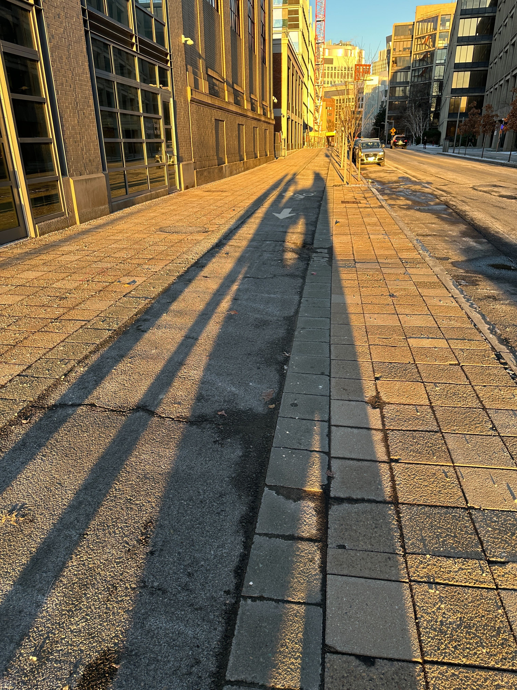

### Week 14
##### _Monday, December 12_
It's go time! All groups worked on finishing touches and assembly. Our group was basically done with machining and design work after printing the last bracket, so we began finishing putting together the bounce mirror and reflector.
After attaching the last bracket, Noah cut 1/4-20 threaded rods into three 2-foot segments. Xavier and I tapped each of the three brackets that would hold a rod. After some filing on the ends of the rods, we screwed all the rods into the brackets. We then inserted the rods into the holes of the bounce mirror frame and aligned the frame ~22 inches from the top of the reflector to make sure that the face of the bounce mirror was close to 21 inches. The frame was kept in place by sandwiching bolts.
Here is our completed reflector structure!
<img src="./good pic.jpg" alt="good pic" width="500"/>
We also took it outside to do some very informal heat radiance testing:
<img src="./testing close.jpg" alt="testing close" width="450"/>
<img src="./testing far.jpg" alt="testing far" width="450"/>

After we were done with the reflector, we helped out with the assembly of the base of the cooker. We discovered some critical misalignments with the parts, so we did our best to make adjustments where needed. We had gotten to the point where the gears for the rotation degree of freedom were put into place before I left.
##### _Wednesday, December 14_
[Head back to the home page](../index.html).